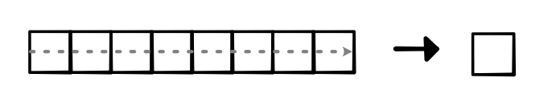
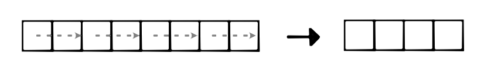
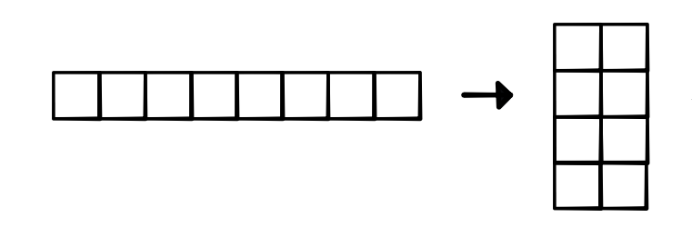
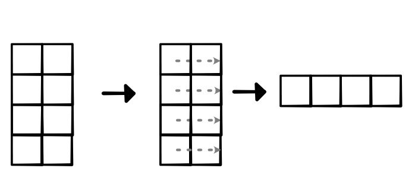
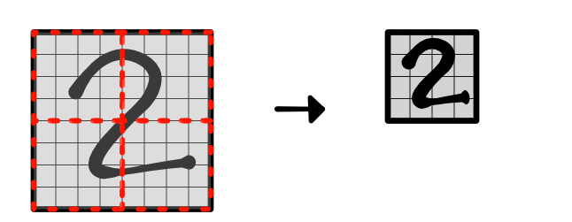

Pooling¶
In previous modules, we have found it useful to reduce over certain dimensions to reduce the shape of tensors. For example, in the NLP example, we sum over the length of the sentence in order to classify based on the summed word representations. Critically, this operation does not remove the importance of words (i.e. they still receive gradient information), but it does allow us to make a single classification decision based on a fixed-sized representation.
This style of network goes by the informal name pooling in the neural network literature. When we reduce part of the input in order to work with a smaller size, we say we have pooled together the input representations.
Applying reduction over length or other dimensions is one form of pooling. For sequential cases, we might call it X-over-time pooling (where X might be a sum, mean, max etc.):
{kind=link}
Another common form of pooling is to only pool locally within a dimension. For instance, we might pool together neighboring elements to reduce thel length for that dimension, as visualized below. This is common in domains like speech recognition where the input sequences are very long.
{kind=link}
In practice, to avoid implementing the pooling operation as a loop, we can manipulate the shape and strides of the input tensor in order to pool it directly. Assuming the input tensor is contiguous, we can simply add an extra dimension by applying view. For instance, we can view a (8,) input as (4, 2):
{kind=link}
Once we have the input in this form, we can reduce over the second dimension to get a (4,1) tensor, which can be viewed as a (4,). As long as the dimensions for pooling are divisible by the pooling constant (i.e. the input size for each individual pooling operation), this procedure will produce the correct pooled result, as visualized below. If not divisible, we can pad our input tensors, or add padding along the way.
{kind=link}
You will implement as version of this type of pooling in two dimensions for images. You need to generalize the above idea in 1D pooling to create a shape with two extra dimesions to reduce over:
{kind=link}
The benefit of pooling is that applying a small convolution over the pooled results covers a larger region in the original input image. These later layers ideally can learn higher-level properties of the input image.